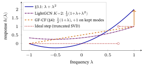

12 The Spectral / Graph-Filter View
LightGCN smooths vectors over a graph. This chapter shows that the smoothing is a filter, a dial for each pattern of the graph, turns the dials by hand on three films, and then meets the recommenders that set the dials in other ways, with and without training. The next chapter, on large language models, uses this view to place this graph line among the other ways of building a recommender.
What this chapter assumes. From Graphs to LightGCN §7 and §12 (graph, adjacency matrix, the normalized adjacency \(\tilde A=D^{-1/2}AD^{-1/2}\), LightGCN’s layers, over-smoothing) and Linear Algebra for Machine Learning §4 to §6 (dot product, eigenvector and eigenvalue, singular value decomposition). Self-Supervised & Contrastive Learning §5 (LightGCL) is optional, for §6.
1. The key idea: signals, graphs, and frequencies
Ann clicked one film, Titanic. From that single click, how can a program guess which other films she may like? A good guess should change smoothly from a film to the films people like with it, and a jagged guess is suspect. This section turns “smooth” and “jagged” into numbers, on a graph of three films.
A sound splits into slow and fast wiggles. Graph Signal Processing (GSP) does the same for numbers sitting on the nodes of any graph (Shuman et al., 2013, survey the field). Such a graph signal is one number per node. Ours lives on three films in the order Titanic, Vendetta, Matrix, and Ann’s click is the signal \(\mathbf r=[1,0,0]\): a \(1\) on the film she liked.
In general, write \(\mathcal I\) for the set of films (items) and \(|\mathcal I|\) for how many there are. A user’s interaction vector \(\mathbf r_u\in\{0,1\}^{|\mathcal I|}\) is a list of \(|\mathcal I|\) numbers, each a \(0\) or a \(1\) (liked or not; the symbol \(\in\) reads “belongs to”, so \(\{0,1\}^{|\mathcal I|}\) is the set of such lists), and it is a signal on the film graph, which joins two films when someone liked both.
Bob liked Titanic and Vendetta, and Cara liked Vendetta and Matrix, so our film graph is a path (§2 builds it from the table). Vendetta is its hub, the film joined to the most others.

Frequency, by counting sign changes. Three patterns of numbers on the three films, drawn as bars in the figure below, are enough. Walk along the path and count how often the sign changes. The first pattern never changes sign (all films agree), the second changes once (Titanic and Matrix disagree, Vendetta is silent) and the third changes at every step.

On a path, the more sign changes along the edges, the higher the frequency. (Each such pattern is also called a mode.) These three patterns are the eigenvectors of the film graph’s normalized adjacency \(\tilde A\) (§3.1 builds \(\tilde A\) and checks each one), and the stretch factor each one gets, its eigenvalue \(\lambda=+1,\,0,\,-1\), is its frequency label.
From zero: eigenvector and eigenvalue (a recap; Linear Algebra for Machine Learning §5 has the full definitions). Hit a vector with a matrix \(\tilde A\) and it usually gets rotated and stretched. A few special directions \(\mathbf v_k\) are only stretched, not rotated: \(\tilde A\,\mathbf v_k=\lambda_k\mathbf v_k\). Such a direction is an eigenvector, and its stretch factor \(\lambda_k\) is its eigenvalue. The stretch factor may be negative (the direction is flipped end to end) or zero (it is squashed to nothing); the three films have one of each.
For a symmetric \(\tilde A\) the eigenvectors form a complete set of perpendicular axes of length \(1\), the eigenbasis, here called the graph Fourier basis, so any graph signal is a weighted sum of them (on the three films, the three patterns above, with eigenvalues \(+1,\,0,\,-1\)). That is what makes “reweight each frequency” well defined.
The rectangular cousin of all this is the singular value decomposition (SVD), \(M=U\Sigma V^{\top}\). The columns of \(U\) and \(V\) are perpendicular pattern directions, one set for \(M\)’s rows and one for its columns, and \(\Sigma\) holds each pattern’s strength, its singular value \(\sigma\) (on the three films, §6 finds \(\sigma=1\) and \(0.707\)). §4 and §6 use it.
For the normalized adjacency, \(\lambda\in[-1,1]\). Low frequency (\(\lambda\) near the top, \(\approx+1\)) means the pattern varies smoothly across connected nodes, so neighbors have similar values. High frequency (\(\lambda\) near the bottom, \(\approx-1\)) means the pattern flips sign sharply between neighbors: jagged, and often noise.
Why no eigenvalue leaves \([-1,1]\). \(\tilde A\) has the same eigenvalues as the row-averaging matrix \(D^{-1}A\), which replaces every node’s value by the plain average of its neighbors’ values. They are related by \(D^{-1}A=D^{-1/2}\,\tilde A\,D^{1/2}\), and rewriting a matrix in different units does not change its stretch factors (on our film path both \(\tilde A\) and \(D^{-1}A\) have eigenvalues \(+1,0,-1\)). An average of numbers is never larger in size than the largest of them in size, so no pattern can grow under this map: \(|\lambda|\le1\).
(That is a ceiling, not a promise that both ends are reached: \(+1\) always is, as the next paragraph shows, and \(-1\) exactly when some connected piece of the graph is bipartite, meaning its nodes split into two groups with edges only between the groups; our film path is one, with the groups {Vendetta} and {Titanic, Matrix}, and its eigenvalues \(+1,0,-1\) include \(-1\). §3 says more.)
Why \(+1\) is always attained. Give every node the same value \(1\). Averaging equal numbers returns that number, so \(D^{-1}A\) leaves the all-ones pattern unchanged (on the path, node by node: \(1/1\), \((1+1)/2\), \(1/1\)), and \(\lambda=+1\) is an eigenvalue of any graph with no isolated node. In \(\tilde A\)’s own units that pattern is \(D^{1/2}\mathbf 1=\sqrt{\text{degree}}\), here \((\sqrt1,\sqrt2,\sqrt1)=(1,1.414,1)\), which has length \(2\); its unit version is \([0.5,\,0.707,\,0.5]\), the smooth pattern drawn as bars earlier in this section. (The degrees themselves are not left unchanged: averaging \((1,2,1)\) over the path gives \((2,1,2)\).)
(The Laplacian is \(L=I-\tilde A\), where \(I\) is the identity matrix, \(1\)s down the diagonal and \(0\)s elsewhere, the matrix that leaves every vector alone. Since \(L\mathbf v=(1-\lambda)\mathbf v\), it has the same patterns with labels \(\mu=1-\lambda\): the smooth mode sits at \(\mu=0\) and the jagged one at \(\mu=2\). This book uses \(\lambda\), smooth at \(+1\); if another source uses \(\mu\in[0,2]\), translate with \(\mu=1-\lambda\).)
The Graph Fourier Transform (GFT), named after Joseph Fourier, who showed that a wide class of signals is a sum of frequencies, projects a signal onto these patterns. You then filter by reweighting frequencies and transform back. All three steps are one line each: \[ \underbrace{c_k=\mathbf{v}_k\cdot\mathbf{r}}_{\text{transform (project)}},\qquad \underbrace{\mathbf{r}=\sum_k c_k\,\mathbf{v}_k}_{\text{transform back (rebuild)}},\qquad \underbrace{\hat{\mathbf{r}}=\sum_k h(\lambda_k)\,c_k\,\mathbf{v}_k}_{\text{filter: rebuild with each part reweighted}} . \]
Decoding it: \(c_k\), a single number, says how much of pattern \(k\) the signal contains, and it is a dot product, the projection of Linear Algebra for Machine Learning §4. Rebuilding with every \(c_k\) untouched returns the original signal exactly, and rebuilding after multiplying each \(c_k\) by \(h(\lambda_k)\) (a weight that depends on the frequency; §3 calls \(h\) the filter’s response) is what “filtering” means. A tiny case, on the three films of §3.1 with Ann’s click \(\mathbf r=[1,0,0]\): the three coefficients are \(c=[0.5,\,0.707,\,0.5]\), one per frequency \(+1,0,-1\), and rebuilding gives \(0.5[0.5,0.707,0.5]+0.707[0.707,0,-0.707]+0.5[0.5,-0.707,0.5]=[1,0,0]\), the click back exactly. §3.1 runs both round trips in full. (The set of eigenvalues is the spectrum of \(\tilde A\), by analogy with a prism splitting light into its spectrum of colors; working with it is what the word spectral means.)
The recommendation intuition. Two films that are liked together a lot are neighbors. The assumption of this whole line of work is that a user’s true taste is smooth over this graph: if you like a film, you probably like its neighbors. Then the useful part of a click signal is low-frequency, and the sparse, idiosyncratic, noisy part is high-frequency. Keeping the low frequencies (a low-pass filter) is denoising the clicks, and predicting what else the user will like. This is the assumption behind the method, not a result, and it is not tested here on real data; §3.1 shows what it does on three films.
In one line: on the three-film path the smooth pattern changes sign \(0\) times, the middle one \(1\) time and the jagged one \(2\) times, and their frequency labels are \(\lambda=+1,\,0,\,-1\).
2. Recommendation = low-pass graph filtering
Ann’s click is a list with one number per film: 1 for Titanic and 0 for the others. As it stands, the list gives Matrix a score of 0. This section builds a film graph from the likes of Bob and Cara, and gives a four-step recipe that lets Ann’s click spread along it, so that Matrix gets a score too.
Here is the recipe for collaborative filtering (CF), which recommends to a user from the pattern of who liked what rather than from any description of the films:
- Build a film–film similarity matrix, normalized, \(\tilde A\), from the interactions.
- Take a user’s interaction vector \(\mathbf r_u\) as the input signal.
- Apply a low-pass filter \(H\) to smooth it: \(\hat{\mathbf r}_u=H\,\mathbf r_u\).
- The smoothed signal \(\hat{\mathbf r}_u\) scores all films, including ones \(u\) never touched. Recommend the top-scoring unseen films.
Step 1, concretely: how to build \(\tilde A\) (from zero). Let \(R\in\{0,1\}^{|\mathcal U|\times|\mathcal I|}\) be the user–film table of likes (row = a user, \(1\) = liked). We build the graph from Bob and Cara, over the columns Titanic, Vendetta, Matrix. Ann is left out to keep the numbers tiny: she liked one film, so she makes no pair of films and adds no edge (her row would raise Titanic’s popularity, which changes the numbers of §4). She is the user we will score.
The film–film co-occurrence is the Gram matrix \(G=R^{\top}R\): a matrix’s transpose times itself, which lists for every pair of columns how many rows have both. Entry \(G_{ij}=\sum_u R_{ui}R_{uj}\) counts the users who liked both films \(i\) and \(j\), because each product \(R_{ui}R_{uj}\) is \(1\) exactly when user \(u\) liked both and \(0\) otherwise. The diagonal \(G_{ii}\) is film \(i\)’s popularity.
\[ R=\begin{bmatrix}1&1&0\\[1pt]0&1&1\end{bmatrix}\ (\text{Bob, Cara}),\qquad R^{\top}R=\begin{bmatrix}1&1&0\\1&2&1\\0&1&1\end{bmatrix}. \]
Here \(G_{22}=1\cdot1+1\cdot1=2\): two users liked Vendetta. Zero the diagonal to leave a pure co-occurrence adjacency \(A\), whose row sums are the degrees \((1,2,1)\), then symmetric-normalize as for any graph: \(\tilde A=D^{-1/2}AD^{-1/2}\) with \(D\) the diagonal matrix of degrees. The result is exactly the path-graph \(\tilde A\) of §3.1: Vendetta was liked together with both Titanic and Matrix, while Titanic and Matrix never co-occur (\(G_{13}=0\)).
From Graphs to LightGCN applies the same normalization to the square block matrix \(A=\begin{bmatrix}0&R\\R^{\top}&0\end{bmatrix}\), users and films listed together as one set of nodes, instead of to \(R^{\top}R\). The rectangular \(R\) has no diagonal to zero and cannot be multiplied by one \(D\) on both sides.

A filter \(H\) is defined by a function \(h(\lambda)\) applied to each frequency: \(H=\sum_k h(\lambda_k)\,\mathbf v_k\mathbf v_k^{\top}\), where \((\lambda_k,\mathbf v_k)\) are the eigenvalue and eigenvector pairs of \(\tilde A\). Each \(\mathbf v_k\) is scaled to length \(1\) and perpendicular to all the others: \(\mathbf v_k\cdot\mathbf v_k=1\) and \(\mathbf v_j\cdot\mathbf v_k=0\) for \(j\neq k\) (an orthonormal basis; Linear Algebra for Machine Learning §4). “Low-pass” means \(h\) is large for low frequencies and small for high ones: it passes the smooth part and suppresses the jagged part. The whole game is choosing \(h(\lambda)\).
The unit length is not decoration. An eigenvector is only fixed up to scale, so \([1,\,1.414,\,1]\) is as valid a \(\lambda=+1\) eigenvector of the film graph as \([0.5,\,0.707,\,0.5]\). But its length is \(2\), so dropping it into the formula would make that term four times too big. Always take the unit-length representative.
Where does \(H=\sum_k h(\lambda_k)\,\mathbf v_k\mathbf v_k^{\top}\) come from? (Building the filter from zero.) A symmetric matrix is its frequencies. The claim has three parts, and all three can be checked on the film graph of §3.1, whose eigenpairs are \(\lambda=+1\) with \(\mathbf v_{+1}=[0.5,\,0.707,\,0.5]\), \(\lambda=0\) with \(\mathbf v_{0}=[0.707,\,0,\,-0.707]\), and \(\lambda=-1\) with \(\mathbf v_{-1}=[0.5,\,-0.707,\,0.5]\).
One: \(\mathbf v\mathbf v^{\top}\) is a projector. It is an outer product (a column times a row, giving a whole matrix). Applied to any signal it regroups as \(\mathbf v\mathbf v^{\top}\mathbf x=(\mathbf v\cdot\mathbf x)\,\mathbf v\): the output is always a multiple of \(\mathbf v\), and the multiple is the signal’s overlap with \(\mathbf v\). Because \(\lVert\mathbf v\rVert=1\) this is the projection onto the line through \(\mathbf v\) (Linear Algebra for Machine Learning §4): it keeps the part of the signal along \(\mathbf v\) and throws the rest away.
One number makes it concrete. Take Ann’s click \(\mathbf r=[1,0,0]\) and the smooth mode: \(\mathbf v_{+1}\cdot\mathbf r=0.5\), so \(\mathbf v_{+1}\mathbf v_{+1}^{\top}\,\mathbf r=0.5\,[0.5,0.707,0.5]=[0.25,\,0.354,\,0.25]\).
Two: adding the projectors back, weighted by the eigenvalues, rebuilds the matrix. This is the spectral decomposition, \(\tilde A=\sum_k\lambda_k\,\mathbf v_k\mathbf v_k^{\top}\). Written out with numbers: \[ \begin{gathered} (+1)\!\begin{bmatrix}0.25&0.354&0.25\\0.354&0.5&0.354\\0.25&0.354&0.25\end{bmatrix} \;+\;0\cdot\!\begin{bmatrix}0.5&0&-0.5\\0&0&0\\-0.5&0&0.5\end{bmatrix}\\[6pt] +\;(-1)\!\begin{bmatrix}0.25&-0.354&0.25\\-0.354&0.5&-0.354\\0.25&-0.354&0.25\end{bmatrix} \;=\;\begin{bmatrix}0&0.707&0\\0.707&0&0.707\\0&0.707&0\end{bmatrix}\;=\;\tilde A . \end{gathered} \]
Every diagonal and corner entry cancels (\(0.25-0.25=0\), \(0.5-0.5=0\)), and the off-diagonal \(0.354-(-0.354)\) doubles to \(0.707\). The mid term contributes nothing, because its weight is \(0\). (Every \(0.354\) is \(1/(2\sqrt2)=0.35355\ldots\) rounded to three places and every \(0.707\) is \(1/\sqrt2=0.70711\ldots\), so adding the rounded \(0.354+0.354\) on a calculator gives \(0.708\): the rounding showing through, not an error.)
Why it works on any symmetric matrix: applied to an eigenvector \(\mathbf v_j\), the sum gives \(\sum_k\lambda_k\,\mathbf v_k(\mathbf v_k\cdot\mathbf v_j)=\lambda_j\mathbf v_j\), because every dot product but one is \(0\). That is precisely what \(\tilde A\) does to \(\mathbf v_j\), and two matrices that agree on every axis of a basis are the same matrix.
Three: so “a function of the matrix” is that function of its eigenvalues. Replace each weight \(\lambda_k\) by \(h(\lambda_k)\) and you have \(H\), which scales frequency \(k\) by \(h(\lambda_k)\) and leaves its pattern \(\mathbf v_k\) untouched. We write this “\(h\) applied to the matrix”: \[ h(\tilde A)\;:=\;H=\sum_k h(\lambda_k)\,\mathbf v_k\mathbf v_k^{\top}, \]
and when \(h\) is a polynomial, \(h(\tilde A)\) is literally that polynomial in \(\tilde A\), namely \(\sum_j\alpha_j\tilde A^{\,j}\), which is what §3 shows LightGCN computing. That single fact is what the rest of the chapter rests on.
In one line: the film graph comes from \(R^{\top}R\) with zeroed diagonal and normalized rows (\(G_{22}=2\), degrees \((1,2,1)\)), and any filter is \(H=\sum_k h(\lambda_k)\mathbf v_k\mathbf v_k^{\top}\): for example, one projector sends Ann’s click \([1,0,0]\) to \([0.25,0.354,0.25]\).
3. LightGCN through the spectral lens
LightGCN stacks layers: a few help, and many hurt. Why? This section shows that a stack of layers (repeated rounds of averaging each film or user with its neighbors) treats each pattern of §1, each smooth-to-jagged wiggle, differently, and shows on three films that a \(K=2\) average is a soft low-pass, then, with one assumed mode, why many layers flatten everything.
Recall (From Graphs to LightGCN) that \(K\) layers of LightGCN (He, Deng et al., SIGIR 2020), the graph recommender that keeps one embedding vector per user and per film and smooths them over the user–film graph, compute, before the layer combination, powers of the normalized adjacency: \[ E^{(K)} = \big(D^{-1/2} A\, D^{-1/2}\big)^{K} E^{(0)} = \tilde{A}^{K} E^{(0)}. \] Decoding it: \(E^{(0)}\) is the matrix whose rows are the starting embeddings of every user and every film, \(E^{(K)}\) is the same matrix after \(K\) rounds of propagation, and \(K\) is the number of layers. Here \(\tilde A\) is the normalized adjacency of the user–film graph, the block matrix of §2; §3.1 returns to the film–film \(\tilde A\) of §1.
The layer combination \(\sum_{j=0}^{K}\alpha_j\tilde{A}^{\,j}\) is a polynomial in \(\tilde{A}\): \(j\) counts layers (\(\tilde A^{\,j}\) is the \(j\)-hop term) and \(\alpha_j\) is the weight of layer \(j\). LightGCN takes the plain average, \(\alpha_j=\tfrac1{K+1}\): for \(K=2\) it is \(\tfrac13 I+\tfrac13\tilde A+\tfrac13\tilde A^{2}\).
In the eigenbasis, multiplying by \(\tilde{A}\) scales each frequency by its eigenvalue \(\lambda_k\in[-1,1]\). Indeed \(\tilde A\mathbf v_k=\lambda_k\mathbf v_k\) gives \(\tilde A^2\mathbf v_k=\tilde A(\lambda_k\mathbf v_k)=\lambda_k^2\mathbf v_k\) and, by induction, \(\tilde A^{\,j}\mathbf v_k=\lambda_k^{\,j}\mathbf v_k\), so the polynomial acts on \(\mathbf v_k\) as the number \(\sum_j\alpha_j\lambda_k^{\,j}\): \[ \underbrace{\sum_{j=0}^{K}\alpha_j \tilde{A}^{\,j}}_{\text{LightGCN}} \;=\; \sum_{k}\underbrace{\Big(\sum_{j=0}^{K}\alpha_j \lambda_k^{\,j}\Big)}_{h(\lambda_k)\ =\ \text{a polynomial low-pass filter}} \mathbf v_k \mathbf v_k^\top. \]
Two indices, two jobs: \(j\) numbers the layers (how many hops), \(k\) numbers the eigenpairs (which frequency). \(\lambda_k\) is the eigenvalue of mode \(k\), never “the eigenvalue of layer \(k\)”.
Therefore LightGCN’s propagation is a low-order polynomial graph filter, and with the layer average it is a soft low-pass (the end of this section shows the average). It is applied to the embedding matrix, whose starting values \(E^{(0)}\) are trained; the filter itself is fixed by the graph and the layer weights. Each propagation layer raises the polynomial’s degree by one. The top eigenvalue is exactly \(\lambda=+1\) (the smooth, collaborative signal; §1 showed it is always attained), and the rest of the spectrum lies in \([-1,+1]\).
Recall the word from §1. A graph is bipartite when its nodes split into two groups with edges only between the groups, never inside one. The user–film graph is bipartite by construction (users link only to films, as in Ann – Titanic – Bob), and on a connected bipartite graph the bottom eigenvalue is exactly \(\lambda=-1\), so the jagged end does not fade on its own.
What a filter must do is therefore suppress the \(\lambda\approx-1\) end rather than wait for it to decay. A low-pass polynomial \(h(\lambda)\) has coefficients that make it large at \(\lambda\approx+1\) and small elsewhere. (§3.1 shows a degree-2 filter doing exactly this: its response, the number \(h(\lambda)\) that says how much of a frequency is kept, is \(0\) at both \(\lambda=0\) and \(\lambda=-1\).)
This reading explains things from the earlier chapters:
- Why neighbor-averaging works. It is low-pass smoothing.
- Why over-smoothing happens (From Graphs to LightGCN §12). Spectrally, \(\tilde{A}^{\,j}\) for large \(j\) drives every mode with \(|\lambda|<1\) to zero and keeps only the modes at \(|\lambda|=1\), so the embeddings collapse onto those few surviving directions. On a connected bipartite user–film graph there are two of them, \(\lambda=+1\) and \(\lambda=-1\) (one such pair per connected piece of a graph that has several).
- Why the \(\lambda=-1\) mode shows up as a parity. Its component flips sign at every hop instead of decaying, which is why the parity (From Graphs to LightGCN §5) and the over-smoothing table (From Graphs to LightGCN §12) tell you to read the even-numbered and the odd-numbered layers as two separate sequences. (On our film path Ann’s click \([1,0,0]\) becomes \([0,0.707,0]\) after any odd number of hops and \([0.5,0,0.5]\) after any positive even number, never settling.) On that chapter’s own 3-user, 3-film graph the spectrum is \(\{1,\,0.809,\,0.309,\,-0.309,\,-0.809,\,-1\}\): two modes at magnitude \(1\), four that decay.
- Why \(W\) and \(\sigma\) could be removed (\(W\) was the per-layer weight matrix and \(\sigma\) the nonlinearity after it, an activation function and not a singular value; §1 and §6 use \(\sigma\) for singular values). From Graphs to LightGCN §14 reports the finding that dropping them did not hurt. The filter view is consistent with it, since the layers’ work is the smoothing, but it does not prove it (a reading, not tested here).
Over-smoothing, as a number: layer count is filter degree. Under a pure \(j\)-hop filter \(h(\lambda)=\lambda^{\,j}\), each mode keeps weight \(\lambda^{\,j}\). The two ends are kept forever: \((+1)^{j}=1\) and \(|-1|^{j}=1\) for every \(j\) (only the jagged mode’s sign flips). Everything strictly inside, \(|\lambda|<1\), shrinks geometrically.
A second, fairly smooth mode at \(\lambda=0.8\) keeps \(0.8^{1}=0.80\) of its weight at \(1\) hop, \(0.8^{4}=0.41\) at \(4\) hops and only \(0.8^{16}=0.028\) at \(16\) hops (a mode’s weight is the single number \(0.8^{\,j}\), so three hop counts show the whole decay). So depth does not build a low-pass: it narrows the filter onto whatever sits at magnitude \(1\). Adding a layer is raising the filter degree, so picking the number of layers and picking how hard to narrow are the same knob.
Which graph you are on decides what survives. A bipartite graph has no odd cycle (a loop of an odd number of edges, such as a triangle), and a connected one carries a mode at exactly \(\lambda=-1\) alongside the one at \(\lambda=+1\). Those two are the same pattern on the user side and differ only in the sign of the film entries, so after many hops (in the limit, when only these two modes survive) every user vector lies along one direction: the collapse that From Graphs to LightGCN §12 measures.
A connected graph has no \(\lambda=-1\) mode exactly when it has an odd cycle or a self-loop; a graph in several pieces has none only when every piece does (one bipartite piece is enough to keep it: a triangle next to a single separate edge still has one \(-1\) mode, from the edge).
One user who liked three films already makes a triangle among those films, with bottom eigenvalue \(-0.5\), so a film–film co-occurrence graph built from many users plausibly has no \(-1\) mode (a reading of how such graphs are built, not tested here on a real catalog). Our three-film path is not of that kind: with two users it is a bare path, which is bipartite, and its bottom eigenvalue is exactly \(-1\).
What damps the jagged end is the layer combination, not the depth. LightGCN averages layers \(0\ldots K\) instead of using the last one alone, and that average is a different polynomial. At \(K=2\) it is \(h(\lambda)=\tfrac13(1+\lambda+\lambda^{2})\), which is \(1\) at \(\lambda=+1\) but only \(\tfrac13\) at \(\lambda=-1\). §3.1 works it out.
Punchline: “graph convolution” and “graph filtering” are the same operation seen from two angles, spatial (average your neighbors) and spectral (reweight frequencies). LightGCN is the spatial face of a low-pass filter.
In one line: a \(K\)-layer LightGCN propagation is a degree-\(K\) polynomial filter; a pure \(j\)-hop filter keeps \(0.8^{16}=0.028\) of a mode at \(0.8\) but all of the modes at \(\pm1\), and the \(K=2\) average keeps \(1\) of the smooth mode and \(\tfrac13\) of the jagged one.
3.1 The whole idea on three films (by hand)
Everything so far was general. Here is all of it on the film path Titanic – Vendetta – Matrix of §1’s film graph, with Ann’s click. (We use the film–film graph for a clean check; the identical filtering math runs on From Graphs to LightGCN’s bipartite user–film \(\tilde{A}\), where only the graph changes, not the idea.)
Its adjacency, with degrees \((1,2,1)\): \[ A = \begin{bmatrix} 0&1&0 \\ 1&0&1 \\ 0&1&0 \end{bmatrix}. \]
Symmetric-normalize. Entry by entry the rule is: divide each edge weight by the square root of the two degrees it connects, \(A_{ij}\big/\sqrt{d_i d_j}\). For the Titanic–Vendetta edge that is \(1/\sqrt{1\cdot2}=1/\sqrt2\approx0.707\), and the same for Vendetta–Matrix. (That is all \(\tilde A=D^{-1/2}AD^{-1/2}\) says: \(D^{-1/2}\) holds \(1/\!\sqrt{\text{degree}}\) on its diagonal, so multiplying on the left scales row \(i\) by \(1/\!\sqrt{d_i}\) and on the right column \(j\) by \(1/\!\sqrt{d_j}\).) With \(1/\sqrt2\approx0.707\): \[ \tilde{A} = \begin{bmatrix} 0&0.707&0 \\ 0.707&0&0.707 \\ 0&0.707&0 \end{bmatrix}. \]
Its three frequencies, the patterns drawn in §1, are all hand-checkable:
| \(\lambda\) | eigenvector \(\mathbf v\) (Titanic, Vendetta, Matrix) | what it looks like |
|---|---|---|
| \(+1\) (low) | \([0.5,\;0.707,\;0.5]\) | smooth, all the same sign |
| \(0\) (mid) | \([0.707,\;0,\;-0.707]\) | hub silent, ends opposite |
| \(-1\) (high) | \([0.5,\;-0.707,\;0.5]\) | jagged, signs flip at every edge |
Check the low one: row 1 of \(\tilde A\mathbf v\) is \(0.707\times0.707=0.5=1\times0.5\) ✓. (We use \(0.707\) as shorthand for \(1/\!\sqrt{2}\); the identity is \((1/\!\sqrt{2})^2=1/2\) exactly, and a calculator showing \(0.49985\) is the rounding of \(0.707\), not a math error.)
One detail. The smooth pattern is biggest at the busiest node: \(0.707\) at the hub Vendetta, only \(0.5\) at the ends. That follows from §1, where the \(\lambda=+1\) pattern is proportional to \(\sqrt{\text{degree}}\), so on any graph the top pattern is biggest where a film is best connected. A low-pass filter keeps mostly this one pattern, so one may expect it to favor well-connected, that is popular, films. We showed this on one path only; whether it holds on a real catalog is a claim from practice, not tested here.
Now filter Ann’s click, \(\mathbf r=[1,0,0]\). Smooth it with the degree-2 polynomial filter \(H=\tilde{A}+\tilde{A}^2\) (one hop plus two hops), chosen because on three films its response is the cleanest illustration there is. (It is not LightGCN’s own combination, which the box below settles.)
- \(\tilde{A}\,\mathbf r=[0,\;0.707,\;0]\): one hop, and the hub Vendetta lights up.
- \(\tilde{A}^2\mathbf r=[0.5,\;0,\;0.5]\): two hops, and Matrix lights up as well.
- \(H\mathbf r=[0.5,\;0.707,\;0.5]\): every film now carries a score, purely from the co-like chain Titanic – Vendetta – Matrix.
Read off the ranking. Titanic is already liked, so it is excluded. Among the films Ann has not touched, Vendetta comes first with \(0.707\) and Matrix second with \(0.5\). Matrix is the interesting one: no user liked both Titanic and Matrix, they never co-occur, yet the filter gives Matrix a positive score through the two-hop chain. That is the whole point of smoothing: it reaches past the data.
The same computation, in the frequency domain (the GFT round trip). Project \(\mathbf r\) onto the three eigenvectors, scale each coefficient by \(h(\lambda)\), then rebuild:
| frequency \(\lambda\) | eigenvector \(\mathbf v\) | coeff \(c=\mathbf v\cdot \mathbf r\) | \(h(\lambda)\) | kept \(h(\lambda)\,c\) |
|---|---|---|---|---|
| \(+1\) (low) | \([0.5,\,0.707,\,0.5]\) | \(0.5\) | \(2\) | \(1.0\) |
| \(0\) (mid) | \([0.707,\,0,\,-0.707]\) | \(0.707\) | \(0\) | \(0\) |
| \(-1\) (high) | \([0.5,\,-0.707,\,0.5]\) | \(0.5\) | \(0\) | \(0\) |
First check the round trip with no filter, as §1 promised: rebuilding with all three coefficients untouched gives \(0.5\,[0.5,0.707,0.5]+0.707\,[0.707,0,-0.707]+0.5\,[0.5,-0.707,0.5]=[0.25,0.354,0.25]+[0.5,0,-0.5]+[0.25,-0.354,0.25]=[1,0,0]=\mathbf r\) ✓. Out and back, nothing changed.
Now rebuild from the surviving row of the table: \(1.0\times[0.5,0.707,0.5]=H\mathbf r\), identical to the spatial hops above. Multiplying by \(\tilde A\) (spatial) and reweighting frequencies (spectral) are two views of the one operation.
Why this is “low-pass,” exactly. The response is \(h(\lambda)=\lambda+\lambda^2\), so \(h(+1)=2\), \(h(0)=0\) and \(h(-1)=0\): it keeps only the smooth \(\lambda=+1\) frequency and zeroes the other two. Ann’s click splits onto all three frequencies, with coefficients \(0.5\) (low), \(0.707\) (mid) and \(0.5\) (high), so the mid part is in fact the largest. The filter deletes the mid and jagged parts and doubles the smooth one, and rebuilding gives \(2(0.5)\,[0.5,0.707,0.5]=[0.5,0.707,0.5]\), which spreads Titanic’s single click onto its co-like neighbors.
What LightGCN’s filter actually is, and why it is a softer low-pass. \(H=\tilde A+\tilde A^2\) zeroes the mid and high bands outright. LightGCN’s own combination does not: it averages every layer starting at \(j=0\), including the node’s own embedding (the term that makes self-loops redundant; From Graphs to LightGCN §12). So at \(K=2\) it is
\[H_{\text{LightGCN}} = \tfrac13\big(I + \tilde{A} + \tilde{A}^{2}\big), \qquad h(\lambda) = \tfrac13\big(1 + \lambda + \lambda^{2}\big),\]
giving \(h(+1)=1\), \(h(0)=\tfrac13\), \(h(-1)=\tfrac13\). That is low-pass, since the smooth band passes three times as strongly as the others, but a soft one: it keeps a third of the jagged mode instead of deleting it, and mid and high come out equal. On Ann’s click it returns \([0.5,\,0.236,\,0.167]\) rather than \([0.5,\,0.707,\,0.5]\).
The gap, and why it matters. On a real graph a low-degree polynomial in \(\tilde A\) can only approximate a sharp cutoff. A graph with \(n\) distinct eigenvalues can have any response matched exactly by a polynomial of degree \(n-1\) (an interpolation problem: hit \(n\) numbers). That is why \(\lambda+\lambda^2\) hit the cliff (a hard cut) exactly above: three distinct eigenvalues, degree \(2\), and \(\tfrac12(\tilde A+\tilde{A}^{2})\) equals the ideal projector (a hard cut that keeps some modes whole and zeroes the rest) \(\mathbf v_{+1}\mathbf v_{+1}^{\top}\) entry for entry.
A real catalog has tens of thousands of distinct eigenvalues and you can afford degree \(2\) or \(3\) (a claim from practice, not tested here), so the cliff is out of reach. That gap is the subject of §5 and §6, and the overlay figure in §6 draws both filters of this section next to two newcomers.

In one line: on three films the degree-2 filter turns Ann’s click \([1,0,0]\) into \([0.5,0.707,0.5]\) (Matrix, which nobody co-liked with Titanic, scores \(0.5\)), in the spatial and the frequency view alike, while LightGCN’s own \(K=2\) average returns \([0.5,0.236,0.167]\).
4. If it’s just a filter, do we even need to train? (Closed-form methods)
Training a recommender takes hours of computer time. If the recipe of §2 already spreads Ann’s click, could we skip the training and write the answer down as one formula? This section builds such a formula by hand for Ann, then counts what the same idea costs in time and memory on a large catalog.
If recommendation is “apply a fixed low-pass filter,” you can often skip gradient descent entirely and write the filter in closed form: no learned embeddings, no epochs. First, one matrix these methods share. The normalized interaction matrix is \[ \tilde R = D_U^{-1/2}\,R\,D_I^{-1/2}, \] that is, each \(1\) in \(R\) divided by \(\sqrt{(\text{that user's number of films})\times(\text{that film's number of users})}\). It is the square-root-of-both-degrees rule of §3.1, applied to the rectangular user–film table instead of a square graph. (\(D_U\) and \(D_I\) are the diagonal matrices of user and film degrees.) A case, with Bob and Cara of §2: Bob liked two films and Titanic has one fan, so his like on Titanic is divided by \(\sqrt{2\times1}\) (worked out in the hand check below).
Four methods, each as its authors describe it:
- GF-CF (Graph Filter based Collaborative Filtering; Shen et al., CIKM 2021, “How Powerful is Graph Convolution for Recommendation?”). Its authors show that several existing CF methods, LightGCN among them, are low-pass filters, and present GF-CF as a baseline that can be computed in closed form instead of by back-propagation (the gradient computation that trains a network). It combines a smoothing filter with an ideal low-pass (a hard cut that keeps the top few patterns, the top singular vectors, and drops the rest; Step 2 below).
- PGSP (Personalized Graph Signal Processing; Liu et al., WWW 2023). Its authors make the signal personal: a user’s input carries richer user information than the interaction row alone, and the similarity graph is augmented. The filter is a mixed-frequency filter, an ideal low-pass that smooths globally combined with a linear low-pass that smooths locally. They call the method nonparametric (it has no parameters learned from data).
- Spectral CF (Zheng et al., RecSys 2018). Its authors call it the first CF method that learns directly from the spectral domain of the user–film graph: a deep model with a spectral convolution (a layer that reweights frequencies, as in §1), trained, not closed-form. It is listed here because it is the line’s earliest member in this chapter’s references; the chapter does not claim the later methods descend from it.
- PSGE (Pure Spectral Graph Embeddings; D’Amico, Lawlor and Hurley, PAKDD 2023). Its authors build user and film representations directly from the eigenvectors with the highest eigenvalues of the normalized adjacency matrix. They say this removes the need for gradient-descent training and gives better results on three real-world datasets. Do not confuse it with PGSP: PSGE’s factors are fixed, PGSP’s personal part is the signal.
GF-CF in our three-film terms (by hand). GF-CF’s filter is a sum of two low-passes: a linear one and an ideal one. For the hand check we build \(R\) from Bob and Cara as in §2, so \(\tilde R=\begin{bmatrix}0.707&0.5&0\\0&0.5&0.707\end{bmatrix}\) (Bob’s two likes each have weight \(1/\sqrt{2\cdot\text{(film's users)}}\): \(1/\sqrt{2\cdot1}=0.707\) for Titanic, \(1/\sqrt{2\cdot2}=0.5\) for Vendetta; Cara’s likewise).
Step 1, the linear part. It is the film–film matrix \(\tilde R^{\top}\tilde R\): the normalized table’s transpose times the table itself, in that order. It is the §2 Gram matrix built from \(\tilde R\) instead of \(R\), and it keeps its diagonal. The order decides users versus films: \(\tilde R\) is \(|\mathcal U|\times|\mathcal I|\), so \(\tilde R^{\top}\tilde R\) is \(|\mathcal I|\times|\mathcal I|\), the \(3\times3\) matrix below, while \(\tilde R\tilde R^{\top}\) would be a \(2\times2\) user–user matrix.
\[ \tilde R^{\top}\tilde R=\begin{bmatrix}0.5&0.354&0\\0.354&0.5&0.354\\0&0.354&0.5\end{bmatrix} =\tfrac12\big(I+\tilde A\big),\qquad\text{response } h(\lambda)=\tfrac{1+\lambda}{2}. \]
Its response is \(1\) at \(\lambda{=}{+}1\), \(\tfrac12\) at \(\lambda{=}0\) and \(0\) at \(\lambda{=}{-}1\), a gentle low-pass: it kills the jagged end and keeps half the middle. (Bare \(\tilde A\) would not be one: its response \(h(\lambda)=\lambda\) passes the \(\lambda=-1\) mode at full strength, merely upside down.) On Ann’s click it gives \(\tilde R^{\top}\tilde R\,\mathbf r=[0.5,\,0.354,\,0]\): Vendetta lit, Matrix still \(0\).
Step 2, the ideal part. A hard projection onto the smoothest component, here the top eigenvector \(\mathbf v_{+1}\), through the §2 projector. With \(\beta=1\) (\(\beta\) is GF-CF’s mixing weight, which the paper writes \(\alpha\); renamed here so it does not collide with §3’s layer weights \(\alpha_j\)): \[ \mathbf v_{+1}\mathbf v_{+1}^\top \mathbf r=(\mathbf v_{+1}\!\cdot \mathbf r)\,\mathbf v_{+1}=0.5\,[0.5,0.707,0.5]=[0.25,\,0.354,\,0.25]. \]
Step 3, the sum. \(H_{\text{GF-CF}}\,\mathbf r=\tilde R^{\top}\tilde R\,\mathbf r+\beta\,\mathbf v_{+1}\mathbf v_{+1}^\top\mathbf r=[0.75,\,0.707,\,0.25]\), so Matrix (never liked by Ann, never co-liked with Titanic) scores \(0.25>0\) and is recommended. Notice which term reaches Matrix. The linear part reaches one hop only, and it is the ideal global low-pass that carries the click all the way across, which is why GF-CF combines the two.
Step 4, the total response. Write \(\mathbb 1[\text{kept}]\) for the indicator that is \(1\) on the mode the ideal part keeps (here the top one) and \(0\) on the others. Then the response is \(\tfrac{1+\lambda}{2}+\beta\,\mathbb 1[\text{kept}]\), which at \(\lambda=+1,\,0,\,-1\) equals \((2,\ \tfrac12,\ 0)\). That is the orange curve of the overlay figure in §6.
The published method adds one refinement we skip: it takes the ideal part from a top-\(q\) SVD of \(\tilde R\) rather than from a single eigenvector, and re-weights it by the film degrees. The structure, a linear low-pass plus an ideal low-pass on \(\tilde R\), is what we reproduced by hand.
What its authors report. In the GF-CF paper’s Table 4, Recall@20 (the share of a user’s held-out films that show up in the top-20 list) on Amazon-Book (book purchases) is \(0.0710\) for GF-CF against \(0.0411\) for LightGCN with 64-dimensional embeddings. The gain is relative: \(0.0299\) more recall on a base of \(0.0411\), a ratio of \(1.73\times\), that is \(73\%\) more (the paper’s abstract rounds this to \(70\%\)), not \(73\) percentage points.
The same table gives \(0.1849\) against \(0.1830\) on Gowalla (location check-ins; \(1\%\) more Recall@20) and \(0.0697\) against \(0.0649\) on Yelp2018 (business reviews; \(7\%\) more), so the big gap is one dataset, not a rule. The same table’s 128-, 256- and 512-dimensional LightGCN rows lead on Gowalla: Recall@20 \(0.1878\), \(0.1893\) and \(0.1892\), above GF-CF’s \(0.1849\), while GF-CF stays ahead on Yelp2018 (\(0.0689\) at 512 dimensions against \(0.0697\)) and Amazon-Book (\(0.0485\) against \(0.0710\)).
On Gowalla the same table’s NDCG@20 (normalized discounted cumulative gain, a score that also rewards ranking the held-out films high in the list) is slightly lower for GF-CF, \(0.1518\) against \(0.1554\), so there the two are close rather than ordered.
The training times in that table are \(65.8\) s for GF-CF against \(1.27\times10^{5}\) s for LightGCN on Amazon-Book, about \(1{,}900\) times as long. These are the paper’s measurements on its hardware; this chapter did not repeat them. A closed-form filter can therefore be a strong, fast baseline, and “many trained gains shrink against it” is as far as these three datasets let us say.
For PGSP and PSGE this chapter read only the abstracts and quotes no number from them; PSGE’s authors say it gives better results on three real-world datasets, and PGSP’s authors present the mixed-frequency filter as their contribution (their words, not tested here).
What does “spectral” actually cost? (When is it feasible?) A filter \(h(\tilde A)\) can be applied two ways, and the cost gap is enormous. A degree-\(K\) filter \(\sum_j\alpha_j\tilde A^{\,j}\), that is LightGCN propagation or GF-CF’s smoothing term, is \(K\) sparse matrix–vector products, costing \(\approx K\cdot\mathrm{nnz}(\tilde A)\), where nnz means the number of non-zero entries. This route never forms a dense matrix, which is what lets it scale to catalogs of millions of films (a claim from practice, not tested here).
The count behind nnz: about twice the number of interactions for the bipartite user–film graph (each interaction is one edge, stored in both triangles), and for a film–film graph the number of co-occurring ordered pairs (each stored in both triangles), which can be far more, since a user with \(m\) films alone contributes \(m(m-1)\) of them.
Getting every \(\mathbf v_k\), that is all \(n\) projectors \(\mathbf v_k\mathbf v_k^\top\) (an exact filter of any shape), needs a full eigendecomposition, all \(n\) eigenvalues and eigenvectors, or an SVD. On \(n\) films that takes on the order of \(n^{3}\) arithmetic operations and \(n^{2}\) numbers of memory, written \(O(n^{3})\) and \(O(n^{2})\): double the films and the time goes up eightfold.
At \(n=40\,000\) films, \(40\,000^{3}=6.4\times10^{13}\) flops (floating-point operations: individual multiplies and adds), and at \(8\) bytes per number a dense matrix takes \(1.6\times10^{9}\times 8=1.28\times10^{10}\) bytes \(=12.8\) gigabytes (GB). At an assumed \(10^{10}\) flops per second, a rough figure for one laptop that we did not measure, \(6.4\times10^{13}\) flops is \(6{,}400\) s, about \(1.8\) hours, and the dense matrix needs more memory than a typical laptop comfortably gives to one matrix. The cheap side, at the same assumed speed: a degree-\(2\) filter on a graph with \(\mathrm{nnz}=2\times10^{6}\) costs \(2\cdot2\times10^{6}=4\times10^{6}\) flops, about \(0.0004\) s. At a million films it is \(10^{18}\) operations and \(8\) terabytes (TB), far out of reach.
The fix is a truncated top-\(q\) SVD, computing only the \(q\) strongest components with an iterative method (Lanczos, or randomized SVD, which find those few components from repeated sparse matrix–vector products; Halko et al. 2011). On a sparse \(\tilde A\) it costs about \(\mathrm{nnz}\cdot q\) per pass of the iteration (a rough count that leaves the number of passes out), which is cheap, and it returns exactly the few smooth components a low-pass keeps.
So “spectral is fast” means: use a low-order polynomial, or a top-\(q\) truncation on a sparse matrix, and never a full dense eigendecomposition. The closed-form methods of this section need no training because the graph fixes their filter; they are fast because computing it takes a few sparse multiplies or a top-\(q\) SVD.
In one line: GF-CF scores Ann’s Matrix at \(0.25\) by a sum of two low-passes with no training, and its authors report Recall@20 of \(0.0710\) against LightGCN’s \(0.0411\) on Amazon-Book (\(73\%\) more) in \(65.8\) s against \(1.27\times10^{5}\) s.
5. Beyond a fixed low-pass: shaped and learnable filters
A filter that keeps only the smoothest pattern of §1 throws everything else away, yet Ann’s taste may include one odd film that no smooth pattern can carry. Can a filter keep a little of the sharp patterns too? This section meets four methods that reshape the filter, and checks by hand two curves behind two of them: the Chebyshev family behind ChebyCF and a heat-type blur like the one in BSPM (Blurring-Sharpening Process Models).
A pure low-pass throws away all high frequencies, but some high-frequency content may be signal (sharp, distinctive tastes), not noise. So a richer line shapes the whole frequency response \(h(\lambda)\). As their authors describe them, two of the four methods below learn the shape by training, and the other two fix it by a recipe and a few chosen settings; each bullet says which.
PolyCF (Polynomial-filter collaborative filtering; Qin et al., ACM Transactions on Information Systems, 2025; arXiv:2401.12590). Its authors say it filters the interaction signal with polynomial graph filters, approximates the optimal polynomial response for recovering missing interactions, and trains the filter’s parameters with two objectives jointly, a graph optimization objective and a pairwise ranking objective (a loss that asks the model to rank a film the user liked above one she did not; Loss Functions & Regularizers has the standard example). Its text writes the response as a sum of polynomial basis functions (it names the Chebyshev basis and the Bernstein basis among the options) and adds an ideal low-pass term to the polynomial term. In this chapter’s simplified notation: \(h(\lambda)=\sum_{j=0}^{K}\theta_j\lambda^j\).
ChebyCF (Chebyshev-interpolated collaborative filtering; Kim et al., Graph Spectral Filtering with Chebyshev Interpolation, SIGIR 2025; arXiv:2505.00552). Its abstract says it takes a user’s raw interaction history instead of a learned embedding, approximates a flexible non-linear graph filter by Chebyshev interpolation, and adds an ideal low-pass term and a degree-based normalization. It reports the best accuracy on its three datasets: LastFM (music listening logs), Gowalla and Amazon-Book, with reasonably fast inference.
Its sections 4.2 and 5.1 describe the coefficients as coming from interpolating a chosen target curve at Chebyshev points (frequencies bunched toward both ends of \([-1,1]\)), with the order fixed (8 in its experiments) and a few more settings (plateau flatness, a mixing weight, a threshold frequency, a power) chosen by grid search (try a list, keep the best). So its filter is not trained by gradient descent, so this chapter does not file it with PolyCF.
BSPM (Blurring-Sharpening Process Models, Choi et al., SIGIR 2023). Its authors present two deterministic processes written as differential equations (rules for how a signal changes from moment to moment), one that blurs the interaction signal (a heat-type smoothing: spreading out like heat) and one that sharpens the blurred result (an inverse of blurring, which in their words retrieves user-specific items). The idea is inspired by score-based generative models, the family behind modern image generators; BSPM borrows only the blur-then-sharpen shape, not a generator. Its authors say there is nothing to train: the blurring and sharpening functions are hand-crafted, without trainable parameters.
ASPIRE (adaptive spectral graph collaborative filtering; He et al., arXiv:2604.22549, 2026), framed as “make spectral CF great again”. Its abstract says a bias in traditional recommendation objectives induces a phenomenon the authors call low-frequency explosion, which hinders learning a filter, and that a bi-level optimization (one optimization problem nested in another) disentangles the filter from it. It also says the learned filters match carefully engineered ones and work for CF powered by large language models.
Two curves to check by hand. The first is the Chebyshev family that ChebyCF’s name refers to. The Chebyshev polynomials \(T_j\) are built one from the last: \(T_0(\lambda)=1\), \(T_1(\lambda)=\lambda\), \(T_{j+1}(\lambda)=2\lambda\,T_j(\lambda)-T_{j-1}(\lambda)\). So \(T_2(\lambda)=2\lambda^2-1\) and \(T_3(\lambda)=4\lambda^3-3\lambda\). At \(\lambda=0.5\): \(T_2(0.5)=2(0.25)-1=-0.5\) and \(T_3(0.5)=4(0.125)-3(0.5)=-1\).
The polynomials stay inside \([-1,1]\) for every \(\lambda\) in \([-1,1]\), because \(T_j(\cos\theta)=\cos(j\theta)\) (for \(j=2\): \(T_2(\cos\theta)=2\cos^2\theta-1=\cos 2\theta\)): each one is a wave that swings evenly between \(-1\) and \(+1\), wiggling \(j\) times. A filter written \(h(\lambda)=\sum_{j=0}^{K}\theta_j T_j(\lambda)\) in this basis expresses exactly the same responses as one written in powers \(\lambda^j\) of the same degree. In the ChebyCF paper’s words, the basis gives a minimax polynomial approximation of analytic functions (smooth curves with no jumps or corners). Minimax means the worst-case error is as small as a polynomial of that degree allows, up to a small factor.
The comparison that follows is this chapter’s gloss, not the paper’s: the error is spread evenly, where a Taylor truncation (the short polynomial built from a function’s slopes at one point) lets it spike at the ends of the interval. A check on the blur \(e^{-0.5(1-\lambda)}\) of the next paragraph, with a degree-\(2\) polynomial: the Taylor polynomial at \(\lambda=0\) is off by up to \(0.0144\) (at \(\lambda=+1\)), and interpolating at the three Chebyshev points \(\pm0.866\) and \(0\) is off by up to \(0.0036\), four times less.
The second curve is a heat-type blur in the spirit of BSPM’s (this chapter’s film-graph version, not BSPM’s own formula). A heat kernel \(h_{\text{blur}}(\lambda)=e^{-t(1-\lambda)}\) is what you get by letting the signal spread over the graph like heat for a time \(t\) (bigger \(t\), more blur). It is \(1\) at \(\lambda=+1\) and \(e^{-2t}\) at \(\lambda=-1\). At \(t=0.5\) it is \((1,\ 0.607,\ 0.368)\) at \(\lambda=+1,\,0,\,-1\), so it keeps the smooth pattern whole and shrinks the jagged one to \(0.37\). The film path has only these three frequencies, so these three values are the whole filter. On Ann’s click, \(0.5\cdot1\cdot\mathbf v_{+1}+0.707\cdot0.607\cdot\mathbf v_0+0.5\cdot0.368\cdot\mathbf v_{-1}\) gives the blurred signal \([0.645,\,0.223,\,0.039]\).
A sketch of sharpening (this chapter’s own, not BSPM’s formula). Take Ann’s click on Titanic as the signal: it is a sharp spike, a \(1\) with zeros beside it. The smooth pattern alone leaves it \(0.25\) (§2) and the blur \(0.645\). A blur washes the click out, and sharpening is meant to win some of it back. Here, add back a fraction \(\gamma\) of what the blur removed: \(h(\lambda)=h_{\text{blur}}(\lambda)+\gamma\bigl(1-h_{\text{blur}}(\lambda)\bigr)\). With \(t=0.5\) and \(\gamma=0.3\) the response at \(\lambda=-1\) rises from \(0.37\) to \(0.56\) and at \(\lambda=0\) from \(0.61\) to \(0.72\), while at \(\lambda=+1\) all three curves equal \(1\) (again, three frequencies, so these three values are the whole filter).
Applied to Ann’s click, the sharpened response gives \([0.752,\,0.156,\,0.027]\). What it shows: her own film Titanic keeps \(0.75\) instead of \(0.645\), so her click is less washed out, and the unseen films fall (Vendetta from \(0.223\) to \(0.156\), Matrix from \(0.039\) to \(0.027\)). This toy shows that the click is kept sharper; it does not show a better ranking, since Titanic is already excluded from the list and the films to recommend fall. BSPM’s real sharpening is a second differential equation applied to the blurred matrix, not this blend.

These trade the training-free simplicity of §4 for an expressive frequency response, chosen by training, by interpolation or by search. The unifying question is always the same: what is the best \(h(\lambda)\)?
In one line: the Chebyshev polynomials give \(T_2(0.5)=-0.5\) and \(T_3(0.5)=-1\), a heat-kernel blur at \(t=0.5\) turns Ann’s click into \([0.645,0.223,0.039]\) and shrinks the jagged mode to \(0.37\), adding sharpening at \(\gamma=0.3\) lifts Titanic from \(0.645\) to \(0.752\), and the four methods differ in whether their authors train the shape (PolyCF, ASPIRE) or fix it (ChebyCF, BSPM).
6. Reconnecting to LightGCL and the SVD view (Self-Supervised & Contrastive Learning)
A table of clicks can also be written as a sum of a few big patterns, found by a matrix split called the SVD, which LightGCL uses (Self-Supervised & Contrastive Learning §5). Why should keeping only the biggest patterns count as filtering? This section connects that split to the frequencies of §1 and checks it on the three films.
The spectral lens explains why LightGCL works, in this chapter’s reading. LightGCL is a graph recommender trained by contrastive learning, that is, by making each node’s embedding agree across two versions (“views”) of the same graph. Its second view is a truncated singular value decomposition (SVD) of the rectangular interaction matrix, and the matrix it decomposes is the degree-normalized \(\tilde R=D_U^{-1/2}RD_I^{-1/2}\) of §4, not the square symmetric \(\tilde A\) of §1 to §3: \[ \tilde{R} \;\approx\; \hat{R}\;=\;U_q\,\Sigma_q\,V_q^{\top}, \]
keeping only the top-\(q\) singular components. Decoding it: \(q\) is how many components you keep, \(U_q\) and \(V_q\) hold the \(q\) dominant user and film patterns, \(\Sigma_q\) their strengths (the singular values), and \(\hat R\), a new matrix and not a set of predicted ratings, is the best rank-\(q\) rebuild of \(\tilde R\) from them.
Keeping the largest singular values acts as an ideal low-pass filter: a hard cutoff that passes the top components and zeroes the rest, versus LightGCN’s soft polynomial roll-off.
Why SVD is low-pass even though “largest singular value” sounds like “highest frequency.” The film–film Gram matrix \(\tilde R^{\top}\tilde R\) (§2’s Gram matrix, now built from \(\tilde R\) and with its diagonal kept) has as its nonzero eigenvalues the squared singular values \(\sigma^2\) of \(\tilde R\), so its largest eigenvalues belong to the top singular vectors. On our three films the table below shows that “large” means “smooth”. On a general catalog we take the same ordering on trust: the top singular vectors capture the dominant, globally coherent co-occurrence patterns (a claim from practice, not tested here). It is the same ordering as §1, where the top of the adjacency spectrum is also the smooth end; only the Laplacian convention reverses it.
§4 showed that on our films \(\tilde R^{\top}\tilde R=\tfrac12(I+\tilde A)\), so its eigenvalues are \(\tfrac{1+\lambda}{2}\) there, and the nonzero ones are the squared singular values \(\sigma^2\), as the table below shows.
| film-graph \(\lambda\) | \(+1\) | \(0\) | \(-1\) |
|---|---|---|---|
| eigenvalue of \(\tilde R^{\top}\tilde R=\tfrac{1+\lambda}{2}\) | \(1\) | \(\tfrac12\) | \(0\) |
On the three films, keeping the top-\(q\) singular values is therefore a low-pass on the film-similarity spectrum (on a general catalog, a claim from practice, not tested here): “top” means “smoothest”, not “jaggiest”.
What the SVD loses is the sign. On the bipartite user–film graph, whose normalized adjacency has eigenvalues in \(\pm\) pairs, \(\lambda_{\text{bip}}=\pm\sigma\), the smooth \(\lambda_{\text{bip}}=+1\) mode and the jagged \(\lambda_{\text{bip}}=-1\) mode land on the same top singular value. They are not two patterns on the film side: §3 stated that they differ only in the sign of the film entries, so seen through films alone they are one. So truncating the SVD is not a way of suppressing \(\lambda_{\text{bip}}=-1\) on the bipartite graph.
Read the subscript carefully: \(\lambda_{\text{bip}}\) is an eigenvalue of the bipartite \(\tilde A\), whose spectrum is spelled out below, and not the film–film \(\lambda\) of §1 to §3. On our three films the relation is \(\sigma^{2}=\tfrac{1+\lambda}{2}\) for the two nonzero eigenvalues, not \(\lambda^{2}\).
The toy, one more time. On Bob, Cara and the three films, \(\tilde R\) and its singular values are \[\tilde R=\begin{bmatrix}0.707&0.5&0\\0&0.5&0.707\end{bmatrix},\qquad \sigma_1=1,\ \ \sigma_2=0.707,\] and the top film pattern is \(V_1=[0.5,\,0.707,\,0.5]\), exactly §3.1’s smooth \(\lambda=+1\) eigenvector. Keeping just it (\(q=1\)) is the ideal part GF-CF added in §4.
This is the bridge between §6’s \(\sigma\) and §1 to §3’s \(\lambda\): the singular values of \(\tilde R\) are the non-negative eigenvalues of the bipartite \(\tilde A\), whose full spectrum here is \[\{1,\,0.707,\,0,\,-0.707,\,-1\}.\] That list has three non-negative entries against \(\tilde R\)’s two singular values, because \(\tilde R\) has more columns than rows (\(3\) films, \(2\) users) and the third direction has no singular value of its own. With more films than users, the \(|\mathcal U|+|\mathcal I|\) eigenvalues are the \(\pm\sigma_i\) pairs plus \(|\mathcal I|-|\mathcal U|\) extra zeros: here \(5=2+2+1\).
So:
- LightGCN propagation is an approximate, polynomial low-pass: smooth, but it leaks some high frequencies and sees only a few hops.
- LightGCL’s SVD view is an ideal, global low-pass: exact top-\(q\) spectrum, seeing the whole graph at once.
Contrasting the two views is, spectrally, contrasting a local polynomial filter against a global ideal filter. This is the chapter’s reading of why LightGCL captures global collaborative structure that local propagation misses (LightGCL’s own authors explain it through global collaborative relations; the filter language is ours). The spectral view thus ties three chapters together: graph convolution (From Graphs to LightGCN), contrastive self-supervised learning (SSL; Self-Supervised & Contrastive Learning) and filtering (this chapter) are three views of one smoothing operation.
Four of this chapter’s filters fit in one picture, now that each has been derived:

In one line: on the three films the eigenvalues of \(\tilde R^{\top}\tilde R\) are \((1,\tfrac12,0)\), of which the first two are the squared singular values \(\sigma^2\), the top film pattern is the same \([0.5,0.707,0.5]\) as the \(\lambda=+1\) mode, so keeping \(q=1\) singular component is the ideal low-pass that GF-CF added in §4.
7. When to reach for the spectral view: trade-offs
You have a week to build a recommender. Do you start with a fixed filter, a trained filter or a graph network? This section gives a three-row table and three rules of thumb, each marked as a claim from practice that this chapter did not test.
| Strength | Weakness | |
|---|---|---|
| Closed-form or interpolated filters (for example GF-CF, PSGE, ChebyCF) | No gradient training; fast (§4: \(65.8\) s for GF-CF, as its authors report); strong static top-\(N\) results (the \(N\) best-scored films per user) reported by the papers | Few dials to adapt; harder to fold in side features; recompute when the graph changes |
| Trained filters (PolyCF, ASPIRE) | Expressive frequency response; their authors report strong accuracy | More tuning; lose the zero-training appeal |
| Embedding GCNs (graph convolutional networks: LightGCN, and its graph contrastive-learning variants) | Learn rich embeddings; easy to extend (large-language-model signal, multimodal, sequential) | Slower; over-smoothing (§3); a good filter can match or beat them on Recall@20 (§4: against 64-dimensional LightGCN on all three datasets, as its authors report, though by \(1\%\) on one; against the GF-CF paper’s larger LightGCN rows (128, 256 and 512 dimensions) it is \(1.5\%\) to \(2.3\%\) lower on Gowalla) |
Four words in that table earn a gloss. Static means the interaction data are treated as fixed between refits, so the filter can be computed once and reused until the next rebuild. Side features are extra attributes attached to a user or a film beyond the interactions, such as a film’s genre. Multimodal means feeding in images or text alongside the clicks. Graph contrastive learning is the training trick of Self-Supervised & Contrastive Learning: build two views of the graph and push each node’s two embeddings together.
Practical takeaways:
- Run a closed-form spectral baseline (GF-CF or PSGE) before claiming a GCN win. It is cheap (§4), and it can tell you whether the trained model’s extra cost buys anything (a rule of practice, not tested here).
- The spectral view gives a story for over-smoothing and layer count (derived in §3): picking layers is picking a polynomial filter degree.
- For work augmented by a large language model (LLM), such as RLMRec (a recommender whose embeddings are aligned with text profiles written by a large language model; Self-Supervised & Contrastive Learning §7), the embedding-GCN line is the usual host, because you need learnable embeddings to align with the text. Spectral methods then serve as the baseline floor and as a source of design ideas, such as an SVD low-pass component à la LightGCL (a design opinion, not tested here).
In one line: the table has three rows and the chapter’s one numeric contrast is §4’s: a closed-form filter in \(65.8\) s against \(1.27\times10^{5}\) s for LightGCN on Amazon-Book, as reported by GF-CF’s authors (this chapter did not repeat it), so run it first and let the rest of the table be a claim from practice.
8. Recent developments (2023–2026)
New spectral papers appear every few months, and a student who finishes this chapter will meet names that are not in it. This section is a signpost, not a lesson: it says what each paper’s authors say, and nothing in §1 to §7 depends on it.
Each paper below, except the sibling named in one aside, is in the references and was compared in October 2026 with its arXiv record (title, authors, date, abstract) and, where it has one, its Crossref record; the Hierarchical GSP abstract was read in the Semantic Scholar record of its DOI, not on arXiv. What is reported is the abstract’s content in this chapter’s words; this chapter did not test any claim.
- ChebyCF (Kim et al., SIGIR 2025) and PolyCF (Qin et al., TOIS 2025) are the two filter-shaping papers of §5. ASPIRE (He et al., arXiv 2026) is the adaptive-filter paper of §5, and BSPM (Choi et al., SIGIR 2023) is a fixed-recipe relative that blurs and then sharpens.
- GSPRec (Bin Rabiah and McAuley, RecSys 2026; arXiv:2505.11552). Its authors say they derive film–film edges from the order of each user’s interactions, strengthen them by multi-hop diffusion with exponential decay, and apply a Gaussian bandpass filter (one that keeps a middle band of frequencies) together with a low-pass filter.
- Hierarchical Graph Signal Processing for Collaborative Filtering (Xia et al., WWW 2024). Its abstract says that graph-signal methods find interaction patterns from all users at once, so the patterns can be distorted by users whose behavior differs. The paper adds a cluster-wise filter, which learns patterns only from users with similar preferences, and a globally-aware filter, which captures the patterns shared by all users, and combines the two linearly. Its authors report tests on six datasets. (A sibling by the same authors, Frequency-aware Graph Signal Processing for Collaborative Filtering, arXiv:2402.08426, is a different method; it cascades an ideal high-pass and an ideal low-pass filter and adds parallel low-pass filters.)
- Spectrum shift (He et al., KDD 2025; arXiv:2502.08071). Its authors say that when graph-structured side information (multimodal similarity graphs, social networks) is added to the user–item graph, the highest frequency of the augmented adjacency matrix shifts rightward from \(-1\), and earlier methods built for the full range \([-1,1]\) then weigh frequencies wrongly. They correct it with shifting and scaling factors. This agrees with §3, where a graph that stops being bipartite loses its mode at \(-1\) (the explanation is §3’s, the observation is theirs).
Taken together, these papers do not support a simple story. Of the methods named in §4 and §5, GF-CF, PGSP, PSGE, BSPM and ChebyCF avoid gradient training, and three (Spectral CF, PolyCF, ASPIRE) learn the filter by training; which approach is better is not tested here.
In one line: the seven papers from 2023 to 2026 either shape the filter (ChebyCF, PolyCF, ASPIRE, BSPM) or change the graph or the bands it filters (GSPRec, Hierarchical GSP, spectrum shift); an eighth, the Frequency-aware Graph Signal Processing sibling, is a separate method named only to tell it apart, and what each claims is what its authors say, not tested here.
9. Exercises
Twelve by-hand problems. Work them with a pencil: the numbers are kept tiny on purpose. Exercises 1 to 5, 7 and 9 to 11 use a second small site (Exercises 6, 8 and 12 use none), with three films F1, F2, F3 and three users: X liked F1 and F2, Y liked F1 and F2, Z liked F2 and F3. A fourth person, W, is a new visitor who is not in the table and whose only click is F3; Exercises 3, 4, 5, 10 and 11 use W’s click (5 reuses the coordinates of 4).
The film graph of this site is a path F1 – F2 – F3, and its three frequency patterns, from the top, are \(\mathbf v_{+1}=[0.577,\,0.707,\,0.408]\) for \(\lambda=+1\), \(\mathbf v_{0}=[0.577,\,0,\,-0.816]\) for \(\lambda=0\) and \(\mathbf v_{-1}=[0.577,\,-0.707,\,0.408]\) for \(\lambda=-1\), in the order F1, F2, F3. Full worked solutions are in the Solutions appendix at the back of the book.
(compute) Build the film graph of the second site from scratch (the §2 recipe). Write the table \(R\) (rows X, Y, Z; columns F1, F2, F3), form the Gram matrix \(G=R^{\top}R\), zero its diagonal to get \(A\), read off the degrees (row sums of \(A\), so a co-occurrence of \(2\) counts \(2\)) and symmetric-normalize \(\tilde A=D^{-1/2}AD^{-1/2}\). Which film is the hub?
(compute) Verify by hand that \(\mathbf v_{-1}=[0.577,\,-0.707,\,0.408]\) is an eigenvector of the \(\tilde A\) of Exercise 1 with eigenvalue \(-1\): compute \(\tilde A\,\mathbf v_{-1}\) one row at a time, to three decimals (use your own \(\tilde A\); if you skipped Exercise 1, take it from the printed answer). Then say, from the signs of \(\mathbf v_{-1}\), why \(\lambda=-1\) is the highest frequency.
(compute) W’s click alone is \(\mathbf r=[0,0,1]\). Use the \(\tilde A\) of Exercise 1. (a) Compute \(\tilde A\mathbf r\) and \(\tilde A^{2}\mathbf r\). (b) With the filter \(H=\tilde A+\tilde A^{2}\), rank the films W has not touched. (c) With the one-hop term \(\tilde A\mathbf r\) alone, which unseen film scores \(0\)? Which unseen film does the two-hop term \(\tilde A^{2}\mathbf r\) reach, and with what value?
(compute) The GFT round trip with no filter, for W’s click \(\mathbf r=[0,0,1]\). (a) Compute its three frequency coordinates \(c_k=\mathbf v_k\cdot\mathbf r\). (b) Rebuild \(\sum_k c_k\mathbf v_k\) and confirm you get \(\mathbf r\) back, to rounding. Which coordinate is the largest in size?
(compute) Filter in the frequency domain with \(h(\lambda)=\big(\tfrac{1+\lambda}{2}\big)^{2}\), which is the response of the matrix \(\big(\tfrac{I+\tilde A}{2}\big)^{2}\). (a) Compute \(h\) at \(\lambda=+1,0,-1\). (b) Scale the coordinates of Exercise 4 by it and rebuild \(\hat{\mathbf r}\). (c) Which unseen film ranks first, and does this ranking agree with Exercise 3’s?
(compute) Over-smoothing as \(\lambda^{\,j}\) decay. Under a \(j\)-hop filter each mode keeps weight \(\lambda^{\,j}\). A second mode sits at \(\lambda=0.9\). (a) Compute \(0.9^{\,j}\) for \(j=1,2,4,8,16,32\). (b) By trial, at which hop count does it first fall below \(0.1\)? (c) A graph has a mode at \(\lambda=-0.95\). What signed weight does it keep at \(j=10\) and at \(j=11\), and at which hop count does its size first fall below \(0.5\)?
(concept) Let \(\mathbf v=\mathbf v_{+1}=[0.577,\,0.707,\,0.408]\) and \(P=\mathbf v\mathbf v^{\top}\). Without multiplying out the \(3\times3\) matrix: (a) show that \(\mathbf v\) has length \(1\); (b) compute \(P\mathbf x\) for user X, \(\mathbf x=[1,1,0]\), who liked F1 and F2 (Y’s row is the same); (c) compute \(P\mathbf v_{-1}\) and say why; (d) give \(\operatorname{trace}P\) (the sum of the diagonal entries) and say what \(P^{2}\) equals and why.
(concept) §4’s cost box contrasts a degree-\(K\) polynomial filter, about \(K\cdot\mathrm{nnz}\) operations, with a full eigendecomposition, \(O(n^{3})\) time and \(O(n^{2})\) memory. Assume a machine that does \(10^{10}\) flops per second and \(8\) bytes per number. (a) For \(n=10{,}000\) films, how many flops, how many seconds and how many GB? (b) The same for \(n=200{,}000\), with the time in days. (c) A site has \(150{,}000\) films, one such machine, and a film graph with \(\mathrm{nnz}=3\times10^{6}\). Give the time of a full dense eigendecomposition and of a degree-\(2\) polynomial filter, and say which you would run.
(extend) Rebuild the matrix from its frequencies. For the second site, \(\tilde A=(+1)\,\mathbf v_{+1}\mathbf v_{+1}^{\top}+0\cdot\mathbf v_0\mathbf v_0^{\top}+(-1)\,\mathbf v_{-1}\mathbf v_{-1}^{\top}\). Compute entries \((1,2)\), \((1,3)\) and \((3,3)\) of this sum and compare each with \(\tilde A\) of Exercise 1. The \(\lambda=0\) term has weight \(0\) here. By how much would entry \((1,3)\) of the sum change if that term carried weight \(0.3\) instead?
(apply) Connect the filter back to LightGCN propagation. Take W’s click \(\mathbf r=[0,0,1]\) and layer weights \(\alpha_0=0.5\), \(\alpha_1=0.3\), \(\alpha_2=0.2\) (\(K=2\)). (a) Compute \(\hat{\mathbf r}=0.5\,\mathbf r+0.3\,\tilde A\mathbf r+0.2\,\tilde A^{2}\mathbf r\), using the vectors of Exercise 3. (b) Give the response \(h(\lambda)=0.5+0.3\lambda+0.2\lambda^{2}\) at \(\lambda=+1,0,-1\) and confirm that \(\sum_k h(\lambda_k)c_k\mathbf v_k\), with the coordinates of Exercise 4, equals \(\hat{\mathbf r}\).
(compute) Read a filter off the eigenvalues. A friend proposes \(h(\lambda)=1-\lambda^{2}\), the response of the matrix \(I-\tilde A^{2}\). (a) Compute \(h\) at \(\lambda=+1,0,-1\). (b) Is it a low-pass filter? Say which modes it keeps. (c) Apply it to W’s click \(\mathbf r=[0,0,1]\) in the frequency domain, using the coordinates of Exercise 4, and check the result against \(\mathbf r-\tilde A^{2}\mathbf r\) with \(\tilde A^{2}\mathbf r\) from Exercise 3.
(concept) Why run a training-free baseline? On a made-up site a closed-form spectral filter reaches Recall@20 of \(0.120\) and a trained graph network reaches \(0.132\), after \(30\) more hours of training. (a) What is the absolute and the relative gain of the trained model? (b) The site refits every week for a year, and each refit of the trained network costs the same \(30\) extra hours. How many extra hours is that in the year, and how many hours per \(0.001\) of Recall@20 gained? (c) Suppose each refit of the trained network had needed \(300\) hours for the same \(0.132\). What changes in the comparison, and what stays the same?
10. Glossary
| Term | Plain meaning |
|---|---|
| Graph Signal Processing (GSP) | Treating one-number-per-node data as a “signal” and processing it with graph frequencies. |
| Graph signal | One value per node (e.g. a user’s interaction vector over films). |
| Graph Fourier Transform (GFT) | Projecting a graph signal onto the eigenvectors of the (normalized) adjacency. |
| Frequency (on a graph) | An eigenvector pattern; on a path, the number of sign changes: low = smooth over neighbors, high = jagged. |
| Eigenvector \(\mathbf{v}\) | A special direction a matrix only stretches (not rotates): \(\tilde{A}\mathbf{v}=\lambda \mathbf{v}\). The graph’s eigenvectors are its “frequency patterns.” |
| Eigenvalue \(\lambda\) | The stretch factor of an eigenvector; here its “frequency” label (\(\lambda\approx+1\) smooth, \(\approx-1\) jagged). |
| Spectrum | The set of a matrix’s eigenvalues; “spectral” means working with it. |
| Bipartite graph | A graph whose nodes split into two groups with edges only between the groups, as users and films do; if it is connected, its bottom eigenvalue is exactly \(-1\). |
| Odd cycle | A loop of an odd number of edges, such as a triangle; a connected graph with one has no \(-1\) mode. |
| Hub | A node joined to many others (Vendetta in the film path). |
| Gram matrix | A matrix’s transpose times itself, \(R^{\top}R\); entry \((i,j)\) counts the users who liked both films \(i\) and \(j\). |
| Projector \(\mathbf v\mathbf v^{\top}\) | The matrix that keeps the part of a signal along the unit vector \(\mathbf v\) and discards the rest. |
| Singular value decomposition, SVD (\(M=U\Sigma V^\top\)) | Factorizes a (rectangular) matrix into patterns \(U,V\) and strengths \(\Sigma\); keeping the top-\(q\) is an ideal low-pass (LightGCL). |
| Low-pass filter | Keep low frequencies (smooth signal), suppress high (noise). |
| Filter response \(h(\lambda)\) | The function deciding how much each frequency is kept; defines the filter. |
| Polynomial filter | A filter that is a polynomial in \(\tilde{A}\) (what LightGCN layers compute). |
| Closed-form / training-free CF | Recommenders that apply a fixed filter with no gradient training (GF-CF, PSGE, by their authors’ account). |
| Ideal low-pass | A hard cutoff: keep the top few patterns whole and zero the rest, as GF-CF’s ideal part and a truncated SVD do (§4, §6). |
| Truncated SVD | Keep top-\(q\) singular components: an ideal low-pass (also LightGCL’s view, Self-Supervised & Contrastive Learning). |
| Over-smoothing | Stacking too many layers: every mode with \(|\lambda|<1\) fades geometrically, so the embeddings collapse onto the few modes at \(|\lambda|=1\): \(\lambda=+1\), and on a bipartite graph \(\lambda=-1\) too, which match up to sign on each side. |
| Chebyshev polynomials | The family \(T_0=1\), \(T_1=\lambda\), \(T_{j+1}=2\lambda T_j-T_{j-1}\): the same filters a plain polynomial can express, the basis ChebyCF interpolates in; interpolating at Chebyshev points spreads the error nearly evenly over \([-1,1]\). |
| Laplacian \(L=I-\tilde A\) | The same patterns as \(\tilde A\) with labels \(\mu=1-\lambda\): smooth at \(0\), jagged at \(2\) (§1). |
| NDCG@20 | Normalized discounted cumulative gain: a score that also rewards ranking a user’s held-out films high in the top-20 list (§4). |
| Heat kernel | The blur \(e^{-t(1-\lambda)}\): signal spreading over the graph like heat for a time \(t\) (the idea behind BSPM’s blur). |
| Normalized interaction matrix \(\tilde R\) | \(D_U^{-1/2}RD_I^{-1/2}\): each interaction divided by the square root of the user’s and the film’s degrees; the matrix GF-CF and LightGCL work on (§6). |
| Recall@20 | The share of a user’s held-out films that appear in the top-20 list. |
11. References
Bin Rabiah, A., & McAuley, J. (2026). GSPRec: On improving item representations in graph signal processing for collaborative filtering. In Proceedings of the 20th ACM Conference on Recommender Systems (RecSys), pp. 291–299. https://doi.org/10.1145/3773078.3831790 arXiv:2505.11552
Choi, J., Hong, S., Park, N., & Cho, S.-B. (2023). Blurring-sharpening process models for collaborative filtering. In Proceedings of the 46th International ACM SIGIR Conference on Research and Development in Information Retrieval (SIGIR), pp. 1096–1106. https://doi.org/10.1145/3539618.3591645 arXiv:2211.09324
D’Amico, E., Lawlor, A., & Hurley, N. (2023). Pure spectral graph embeddings: Reinterpreting graph convolution for top-N recommendation. In Advances in Knowledge Discovery and Data Mining (PAKDD 2023), Lecture Notes in Computer Science, pp. 310–321. https://doi.org/10.1007/978-3-031-33380-4_24 arXiv:2305.18374
Halko, N., Martinsson, P.-G., & Tropp, J. A. (2011). Finding structure with randomness: Probabilistic algorithms for constructing approximate matrix decompositions. SIAM Review, 53(2), 217–288. https://doi.org/10.1137/090771806
He, X., Deng, K., Wang, X., Li, Y., Zhang, Y., & Wang, M. (2020). LightGCN: Simplifying and powering graph convolution network for recommendation. In Proceedings of the 43rd International ACM SIGIR Conference on Research and Development in Information Retrieval (SIGIR), pp. 639–648. https://doi.org/10.1145/3397271.3401063 arXiv:2002.02126
He, Y., Xu, C., Wang, J., & Zhang, W. (2025). Collaborative filtering meets spectrum shift: Connecting user–item interaction with graph-structured side information. In Proceedings of the 31st ACM SIGKDD Conference on Knowledge Discovery and Data Mining (KDD), pp. 920–931. https://doi.org/10.1145/3711896.3736885 arXiv:2502.08071
He, Y., Xu, C., Zhu, Z., Yin, H., & Zhang, W. (2026). ASPIRE: Make spectral graph collaborative filtering great again via adaptive filter learning. arXiv preprint arXiv:2604.22549.
Kim, C., Sung, J., Han, Y., & Lee, J. (2025). Graph spectral filtering with Chebyshev interpolation for recommendation. In Proceedings of the 48th International ACM SIGIR Conference on Research and Development in Information Retrieval (SIGIR), pp. 1964–1974. https://doi.org/10.1145/3726302.3729991 arXiv:2505.00552
Liu, J., Li, D., Gu, H., Lu, T., Zhang, P., Shang, L., & Gu, N. (2023). Personalized graph signal processing for collaborative filtering. In Proceedings of the ACM Web Conference (WWW), pp. 1264–1272. https://doi.org/10.1145/3543507.3583466 arXiv:2302.02113
Qin, Y., Ju, W., Gu, Y., Qiao, Z., Xiao, Z., & Zhang, M. (2025). PolyCF: Towards optimal spectral graph filters for collaborative filtering. ACM Transactions on Information Systems, 43(4), 1–28. https://doi.org/10.1145/3728464 (The arXiv version, arXiv:2401.12590, is titled PolyCF: Towards the optimal spectral graph filters for collaborative filtering and lists Qin, Ju, Luo, Gu, Xiao and Zhang; the journal version’s author list is the one printed here.)
Shen, Y., Wu, Y., Zhang, Y., Shan, C., Zhang, J., Letaief, K. B., & Li, D. (2021). How powerful is graph convolution for recommendation? In Proceedings of the 30th ACM International Conference on Information and Knowledge Management (CIKM), pp. 1619–1629. https://doi.org/10.1145/3459637.3482264 arXiv:2108.07567
Shuman, D. I., Narang, S. K., Frossard, P., Ortega, A., & Vandergheynst, P. (2013). The emerging field of signal processing on graphs: Extending high-dimensional data analysis to networks and other irregular domains. IEEE Signal Processing Magazine, 30(3), 83–98. https://doi.org/10.1109/MSP.2012.2235192
Xia, J., Li, D., Gu, H., Lu, T., Zhang, P., Shang, L., & Gu, N. (2024). Hierarchical graph signal processing for collaborative filtering. In Proceedings of the ACM Web Conference (WWW), pp. 3229–3240. https://doi.org/10.1145/3589334.3645368 (Only its abstract was read, in the Semantic Scholar record of the DOI; Crossref carries none. The text names a sibling method by the same authors, Frequency-aware graph signal processing for collaborative filtering, arXiv:2402.08426, which is a different paper.)
Zheng, L., Lu, C.-T., Jiang, F., Zhang, J., & Yu, P. S. (2018). Spectral collaborative filtering. In Proceedings of the 12th ACM Conference on Recommender Systems (RecSys), pp. 311–319. https://doi.org/10.1145/3240323.3240343 arXiv:1808.10523
Checked in October 2026: every DOI that has a Crossref record against it, and every arXiv number against arXiv (title, authors, venue, pages, date); the papers’ claims were not tested. Full text read for ChebyCF (sections 4.2 and 5.1), BSPM, PolyCF (section 4) and GF-CF (Tables 3 and 4); only the abstract for the other recommender papers, and metadata only for Halko et al., LightGCN and Shuman et al. Crossref has no record for ASPIRE and no volume for PSGE.